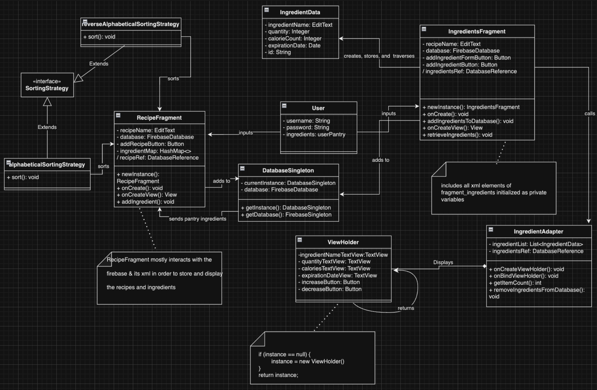
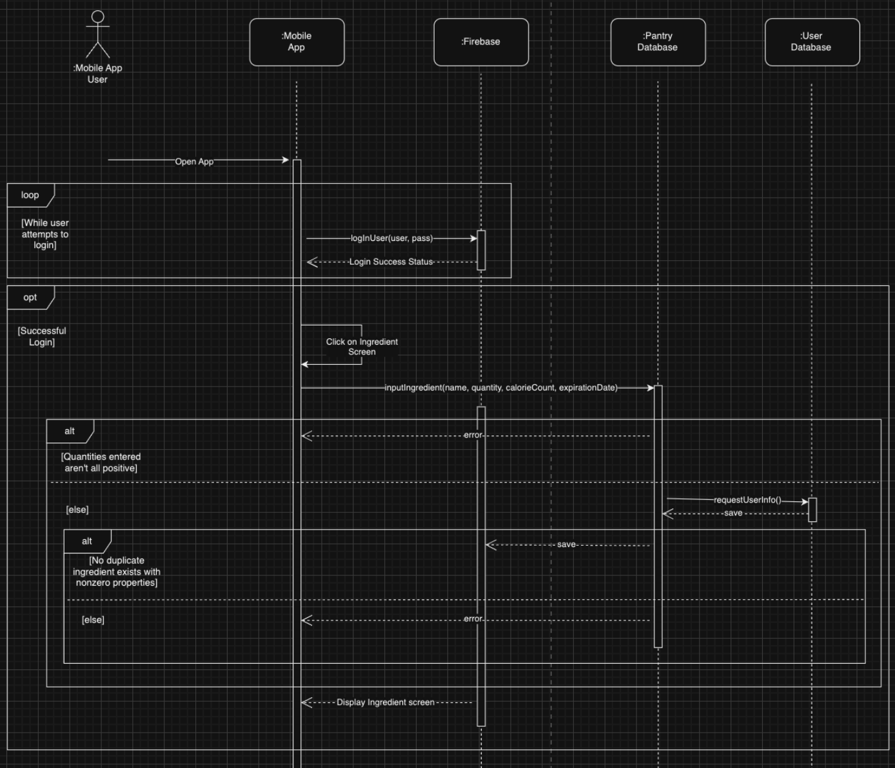

Welcome to GreenPlate!
Step into a world where food isn't just sustenance but a pathway to sustainability. Welcome to GreenPlate, where innovation meets conscience, and every meal becomes a statement. GreenPlate isn't just another app; it's a revolution in how we approach food management. Gone are the days of mindless consumption and wasteful practices. With GreenPlate, each meal is a conscious choice, each ingredient a step towards a greener future. Picture this: a world where your shopping list isn't just a list but a curated selection of items that minimize waste and maximize nutrition. With GreenPlate's intuitive interface, meal planning becomes an art, and grocery shopping becomes a mission. But GreenPlate isn't just about what you eat; it's about how you eat. With features designed to track your calorie intake and analyze your eating patterns, GreenPlate becomes your personal nutritionist, guiding you towards healthier habits and a more mindful lifestyle. And the best part? GreenPlate isn't just for you; it's for the planet. By reducing food waste and promoting sustainable practices, GreenPlate is paving the way for a brighter, greener future. So come, join us on this journey towards a world where every bite counts, and every meal makes a difference. Welcome to GreenPlate, where sustainability meets satisfaction, and every plate tells a story.
Our Design & Architecture
Dive into the behind-the-scenes magic of GreenPlate. We've carefully crafted our app's design and architecture to ensure a seamless and intuitive user experience. Take a peek behind the curtain! Below, you can see the SD and DCD diagrams that went into organizing the structure of our app!
 Take a Tour of Our UI
Feast your eyes on the beautiful screens of GreenPlate! Our user interface is designed with love and care, making sustainable eating and shopping a breeze. Take a virtual stroll through our app!
See Us in Action
Curious about how GreenPlate works? Watch our demo video to see our app in action! We'll walk you through all the amazing features and functionalities.
Our Journey & Learnings
Throughout the development journey of GreenPlate, we've had the privilege of contributing to a project that not only aims to revolutionize food management but also fosters a deeper understanding of sustainability and its implications. Our collective role in this endeavor has been multifaceted, encompassing various aspects of ideation, design, development, and testing. One of the most significant contributions we've made to GreenPlate is in the conceptualization and refinement of its core features. Collaborating as a team, we helped shape the vision of the application, ensuring that it aligns closely with our mission of promoting sustainable eating habits and minimizing food waste. This involved brainstorming sessions, user feedback analysis, and iterative design iterations to create an intuitive and user-friendly experience. However, the journey hasn't been without its challenges. One of the major hurdles we faced was in the technical implementation of certain features, particularly in integrating complex features for meal planning and calorie tracking. Overcoming these challenges required research, learning, and creative problem-solving. Additionally, ensuring the scalability and maintainability of the application posed its own set of challenges, requiring careful architectural planning and adherence to best practices. Despite the challenges, the development process of GreenPlate has been incredibly rewarding, both professionally and personally. We've gained invaluable insights into sustainable technology solutions, honed our technical skills, and deepened our understanding of the intersection between technology and environmental conservation. Moreover, working on a project with a clear social impact has been immensely fulfilling, knowing that our efforts have the potential to make a tangible difference in the world.
Meet Our Amazing Team
None of this would have been possible without our incredible team of contributors. Meet the talented individuals who poured their heart and soul into bringing GreenPlate to life! TA: Rohan Batra Team Members: Max Boggus, Bianca Jayaraman, Sam Nelson, Gabe Gomez, Jeslyn Guo, Om Rajpal